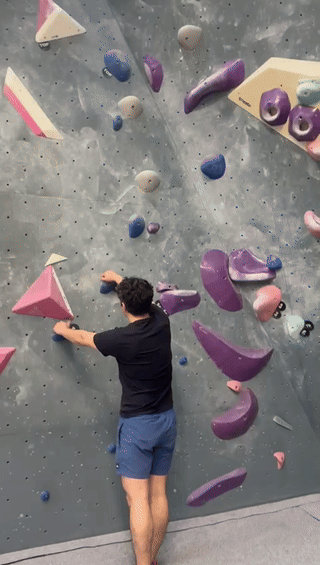

1. The Final Send (Controlled Finish)

Analysis
Your best form of the day. You utilized full arm extension on the top reaches, which kept your pump under control. Footwork was precise on the purple chips.
2. The Horizontal Traverse

Analysis
A challenging horizontal sequence. You struggled with hip proximity here—as you moved sideways, your center of mass drifted away from the wall, making the holds feel "greasier."
3. Purple & Beige Sequence

Analysis
Good effort on technical holds. The fall happened during a dynamic weight shift where your feet weren't fully set before the hand move.
4. Black Volume Mastery

Analysis
Great use of the large black volumes! You showed agility and confidence moving through the scrunched-up sections without over-pulling.
5. The High Reach Slip

Analysis
You went for a high orange hold but lost balance mid-reach. Your trailing foot "cut" (popped off), which sent your momentum away from the wall.
6. The Pumpy Crux

Analysis
By this point in the video, forearm fatigue was visible. You reverted to the "bent-arm" habit, which accelerated the pump until your grip simply gave out.